Escolha Seu Destino!
Ao iniciar sua jornada em The Stick of Truth, você deverá escolher uma das quatro classes disponíveis para o Novato. Cada classe oferece habilidades únicas e estilos de combate distintos, influenciando diretamente sua estratégia de jogo. Qual será a sua escolha, Novato?
| Classe | Estilo de Jogo | Habilidades Chave |
|---|---|---|
| Guerreiro | Combate corpo a corpo, tank, alto dano. | Ataque de Poder, Grito de Batalha |
| Mago | Ataques à distância, controle de multidão, debuffs. | Feitiço de Fogo, Rajada Gelada |
| Ladrão | Ataques rápidos, stealth, debuffs. | Ataque Furtivo, Roubo de Itens |
| Judeu | Habilidades de suporte, sangramento, ataques a distância. | Estilingue, Maldição do Golem |
Guerreiro
O Guerreiro é a escolha ideal para quem gosta de estar na linha de frente, absorvendo dano e causando estragos com suas armas e músculos. Suas habilidades focam em combate direto e brutalidade.
| Habilidades | Descrição |
|---|---|
| Assalto e Agressão: Golpeia o inimigo, causando dano contundente | |
| 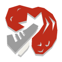 | Roshamboo: Ataque rapido e direto nas bolas, atordoa oponente. |
| 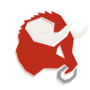 | Corrida de Touros: Investida de cabeça contra o inimigo, reduz defesa |
| 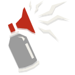 | Chifre da Irritação: Provoca todos os inimigos e remove seus buffs. |
| 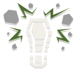 | Pisada no chão: Pisoteia todos os inimigos com ataque aéreo. |
Mago
Os Magos usam a força de seus "peidos mágicos" e outros feitiços para controlar o campo de batalha, infligindo dano elemental e status negativos. Ótimo para quem prefere estratégia e controle.
| Magias | Descrição |
|---|---|
| 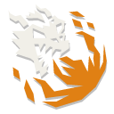 | Bafo do Dragão: Queima seu alvo com uma rajada de chamas. |
| 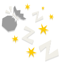 | Poeira dos sonhos: Coloca o inimigo para dormir. |
|  | Relâmpago Voltaico: Atinge o alvo com um relâmpago que derrete armaduras |
| Funil de Gelo: Atinge uma fileira de inimigos com um ataque congelante que remove efeitos benéficos de status. | |
| 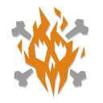 | Bola de Pira: Arremessa uma bola de alegria explosiva em todos os inimigos. |
Ladrão
Velozes e astutos, os Ladrões preferem ataques rápidos e furtividade. Eles podem desabilitar inimigos e roubar seus pertences, tornando-os mestres da tática e da surpresa.
| Truques | Descrição |
|---|---|
| 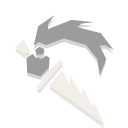 | Golpe nas Costas: Ataca o inimigo pelas costas, causando dano crítico. |
| 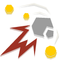 | Furto: Ataque rápido e direto que rouba um item do oponente e o atordoa. |
| 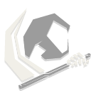 | Executar: Saraivada de armas que destroem armaduras e escudos. |
| 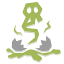 | Bombas de Fedor: Jogue ovos podres nos inimigos, causando nojeira e removendo buffs. |
| Morte dos Mil Cortes: Uma série de ataques rápidos que desferem cortes em todos os inimigos. |
Judeu
Com habilidades únicas de suporte e ataques baseados em sangramento e status, o Judeu é uma classe versátil que pode suportar e desabilitar, ideal para jogadores que gostam de um estilo de jogo mais complexo.
| Poderes | Descrição |
|---|---|
| 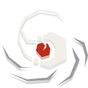 | Funda de Davi: Atire a primeira pedra no inimigo |
| 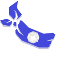 | Jewjitsu: Utiliza uma arte marcial judaica secreta para golpear seu alvo com um golpe atordoante. |
| 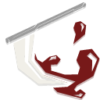 | Foice da Circuncisão: Corta a armadura e os escudos do seu alvo |
|  | Perdição Giratória: Faça seu dreidel quicar entre inimigos aleatórios, eliminando todos os efeitos de status benéficos de todos os inimigos atingidos. |
| 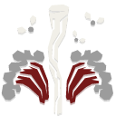 | Pragas do Egito: Invoque uma mistura de Peste, Granizo Ardente, Sapos e Insetos Voadores para trazer desgraça a todos os seus inimigos. |